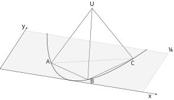
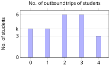

HKDSE 卷一 模拟试题分类汇编（2023-2024）
本檔案收錄 2023–2024 年香港模擬文憑考試數學（必修部分）卷一全部 133 道試題， 按考點大類分類，每類下再按模擬卷分（2023 CP01–CP05、2024 CP01–CP02），卷內按原卷題號排序。
| 類別 | 題數 | 說明 |
|---|---|---|
| 代數 | 62 | 方程、不等式、數列、多項式、變分、對數、百分數等 |
| 幾何 | 42 | 三角形/圓的性質、坐標幾何、立體幾何、度量、三角學 |
| 統計 | 23 | 集中趨勢、離散度、統計圖、概率與排列組合 |
| 組合（跨領域） | 6 | 融合兩個或以上大類的綜合題 |
注：原題中的 TikZ 矢量圖以 TikZJax 代碼塊形式保留（ ```tikz ），需在 Obsidian 中安裝並啟用 TikZJax 插件方可渲染。
試題為原文繁體，分題沿用 (a)、(b)、(i)、(ii) 標號。
代數（62題）
2023 CP01（11題）
1. 【1】 指數運算、負指數轉換
化簡
(3分)
2. 【2】 因式分解、十字相乘
因式分解
(a)
(b)
(4分)
3. 【3】 主項變換
令
(3分)
4. 【4】 百分數應用（折扣、盈利百分率）
一件動漫手辦打
(3分)
5. 【5】 複合不等式、整數解
(a) 解複合不等式組
(b) 於 (a) 不等式組的解中有多少個整數滿足
(4分)
6. 【6】 多項式求值
設
(3分)
9. 【9】 聯立方程應用
一組老師與學生參加活動，該活動學生的報名費為 $ 72，老師為 $ 102， 若該活動中學生與老師共支出 $ 1680且學生與老師之比為3比2。
(a) 求學生與老師的人數之差。
(b) 若2人退出活動，求新的所支出金額的最大值。
(5分)
10. 【10】 變分、判別式
已知
(a) 求
(4分)
(b) 某人宣稱方程
(2分)
13. 【13】 多項式、餘式定理、因式
設一多項式
(a) 求
(3分)
(b)
(1分)
(c) 某學生認為
(2分)
15. 【15】 對數、線性函數、指數
已知
(a) 已知該函數的圖像的水平軸及垂直軸截距分別為
(2分)
(b) 將該函數寫為
(2分)
17. 【17】 等比數列、無限項和
設
(a) 求
(3分)
(b) 等比數列
(i) 數列
(ii) 求
(4分)
2023 CP02（8題）
1. 【1】 主項變換
令
(4分)
2. 【2】 指數運算、負指數轉換
化簡
(3分)
3. 【3】 因式分解、恆等式
考慮
(a) 將
(b) 化簡
(6分)
4. 【4】 有效數字、誤差
(a) 將
(b) 於 (a) 的結果與真確值的誤差是否小於
(3分)
5. 【5】 比例、聯立方程
在某校中四級
(3分)
6. 【6】 複合不等式
考慮複合不等式組:
(a) 解
(b) 有多少個正整數滿足
(4分)
14. 【14】 多項式除法、有理根
設
(a) 以
(5分)
(b) 考慮多項式
(i) 證明
(ii) 方程
(5分)
18. 【18】 等比數列、對數、等差數列
設
(a) 以
(2分)
(b) 已知
(4分)
2023 CP03（8題）
1. 【1】 因式分解、十字相乘
因式分解下列各式：
(a)
(b)
(4分)
2. 【2】 指數運算、負指數轉換
化簡
(3分)
3. 【3】 主項變換
令
(4分)
4. 【4】 百分數應用（盈利）
一部鍵盤的售價為
(a) 求一部鍵盤的成本。
(b) 賣方宣稱該鍵盤的售價於打五折後售出時會虧損，你是否同意? 試解釋。
(4分)
5. 【5】 二次方程（整數積和）
兩個相鄰的整數之積為
(4分)
6. 【6】 複合不等式（或）
考慮不等式組：
(a) 解
(b) 於
(4分)
10. 【10】 變分、二次函數、面積
已知一函數
(a) 求
(b) 記
(6分)
15. 【15】 等差數列、等比數列
設一數列
(a) 以
(2分)
(b) 設另一數列
(3分)
2023 CP04（10題）
1. 【1】 代數分式化簡
化簡
(3分)
2. 【2】 指數運算、負指數轉換
化簡
(3分)
3. 【3】 主項變換
令
(3分)
4. 【4】 誤差、最大獲利
一鹽商將
(3分)
5. 【5】 不等式組
考慮下列不等式：
(a) 解
(b) 是否存在實數
(4分)
6. 【6】 聯立方程應用
考慮一瓶裝蘋果汁與一瓶裝橙汁，小明分別喝了
(4分)
10. 【10】 變分、指數方程
設
(a) 求
(b) 解方程
(6分)
13. 【13】 多項式、餘式定理、根之和
設
(a) 求
(3分)
(b) 已知
(5分)
16. 【16】 數列（等差、等比）
設一數列的第
(5分)
17. 【17】 二次方程根、恆等式
考慮二次方程
(a) 證明
(3分)
(b) 設二次方程
(5分)
2023 CP05（8題）
1. 【1】 指數運算、負指數轉換
化簡
(3分)
2. 【2】 因式分解
因式分解下列各式：
(a)
(b)
(4分)
3. 【3】 百分數應用、聯立方程
在市場中，品牌
(a) 求品牌
(b) 若售出一件品牌A墨水的盈利百分率為
(4分)
4. 【4】 恆等式、比值
若
(3分)
5. 【5】 不等式組
考慮不等式
(a) 解
(b) 是否存在至少一個整數
(4分)
6. 【6】 二次方程（面積差）
兩正方形面積之差為
(4分)
10. 【10】 變分、二次函數、面積比
函數
(a) 求
(b) 設
(6分)
13. 【13】 多項式、餘式、虛數根
設一多項式
(a) 求
(2分)
(b) 已知
(2分)
(c) 某人宣稱方程
(3分)
2024 CP01（8題）
1. 【1】 因式分解
因式分解下列各式：
(a)
(b)
(3分)
2. 【2】 指數運算、負指數轉換
化簡
(3分)
3. 【3】 指數、複利
小明將本金
(3分)
4. 【4】 不等式組
考慮以下不等式：
(a) 解
(b) 設
(4分)
6. 【6】 聯立方程應用
一培養皿內含有大腸桿菌與乳酸菌兩種細菌。
開始時，培養皿內共有
(4分)
11. 【11】 變分、二次函數
函數
(a) 求
(b) 求常數
(7分)
13. 【13】 多項式、整除
設
(a) 證明
(1分)
(b) 證明
(6分)
18. 【18】 複數
設
(a) 若
(4分)
(b) 若
(3分)
2024 CP02（9題）
1. 【1】 因式分解、代數分式
(a) 因式分解
(b) 化簡
(4分)
2. 【2】 指數運算、負指數轉換
化簡
(3分)
3. 【3】 主項變換
令
(3分)
4. 【4】 百分數應用（盈利）
一商家出售某件商品後獲利
(4分)
5. 【5】 不等式組
(a) 解不等式組
(b) 是否存在實數滿足不等式
(5分)
6. 【6】 恆等式
已知
(3分)
14. 【14】 多項式除法、無理根
設
(a) 若
(2分)
(b) 若
(i) 求
(ii) 已知方程
(7分)
15. 【15】 對數、線性函數
已知
(3分)
18. 【18】 數列遞推、求和
設
(a) 設
(2分)
(b) 考慮
(i) 證明
(ii) 某人宣稱
(7分)
幾何（42題）
2023 CP01（6題）
7. 【7】 三角形性質、垂直、相似
下圖所示多個三角形，
查看 TikZ 原始碼
\begin{document}
\begin{tikzpicture}[xscale = 1.8,yscale = 1.8]
\draw[line width=0.8pt] (0,0) -- (2,2) -- (3.5,0) -- (2,0) -- (0,0);
\draw[line width=0.8pt] (2,0) -- (2,2);
\draw[line width=0.8pt] (2,0) -- (1,1);
\node[label=above:$A$] at (2,2) {};
\node[label=left:$B$] at (0,0) {};
\node[label=right:$C$] at (3.5,0) {};
\node[label=:$D$] at (1,1) {};
\node[label=below:$E$] at (2,0) {};
\end{tikzpicture}
\end{document}(a) 求
(b) 判斷
(5分)
8. 【8】 極坐標、三角形面積、銳角判斷
在一極坐標系中，存在
(a) 求
(b) 判斷
(5分)
12. 【12】 立體幾何（圓錐）、相似
考慮兩個底相同且重疊的直立圓錐體
(a) 求
(2分)
(b) 若
(2分)
(c) 現知圖中的兩直立圓錐體為一倒置的容器，
(5分)
14. 【14】 坐標幾何（圓方程、切線）
设圓
(a)
(1分)
(b) 已知
(i) 求
(ii) 若直線
(6分)
18. 【18】 坐標幾何、二次函數、三角形四心
設一圓
(a) 求
(2分)
(b) 定義
(i) 以
(ii) 已知
(5分)
19. 【19】 立體幾何、交角
圖一顯示一平面紙卡，其中
查看 TikZ 原始碼
\begin{document}
\begin{tikzpicture}[line width=0.8pt,xscale = 1.3,yscale = 1.3]
\draw (0,0) arc (180:360:1);
\draw (0,0) -- (1,3) -- (2,0);
\draw (0,0) -- (2,0);
\draw (1,-1) -- (1,3);
\node[label=above:$A$] at (1,3) {};
\node[label=left:$B$] at (0,0) {};
\node[label=right:$C$] at (2,0) {};
\node[label=below:$D$] at (1,-1) {};
\node[label={[above right, xshift=-1.2mm, yshift=-1.2mm]:$O$}] at (1,0) {};
\end{tikzpicture}
\end{document}image
圖一 圖二
(a) 求
(3分)
(b) 現將平面紙卡沿
(i) 求平面
(ii) 當
(9分)
2023 CP02（7題）
7. 【7】 圓、全等、角
圖示一圓
查看 TikZ 原始碼
\begin{document}
\begin{tikzpicture}[xscale = 2.5,yscale = 2.5]
\draw (0,0) circle (1);
\draw (-0.707106781,-0.707106781) -- (0.707106781,0.707106781) -- (0.707106781,-0.707106781) -- (-0.707106781,-0.707106781);
\draw (0.707106781,-0.707106781) -- (-0.707106781,0.707106781) -- (-0.707106781,-0.707106781);
\draw (0.707106781,-0.707106781) -- (-0.965925826,0.258819045) -- (-0.707106781,0.707106781);
\node[label={[above,yshift=-1pt]:$O$}] at (0,0) {};
\node[label={[above left,xshift=5pt,yshift=-5pt]:$A$}] at (-0.707106781,0.707106781) {};
\node[label={[below right,xshift=-3pt,yshift=0pt]:$B$}] at (0.707106781,-0.707106781) {};
\node[label={[below left,xshift=3pt,yshift=0pt]:$C$}] at (-0.707106781,-0.707106781) {};
\node[label={[above right,xshift=-5pt,yshift=-5pt]:$D$}] at (0.707106781,0.707106781) {};
\node[label={[left,xshift=2pt,yshift=0pt]:$E$}] at (-0.965925826,0.258819045) {};
\node[label={$F$}] at (-0.8,-0.1) {};
\node[label={$G$}] at (-0.2,-0.45) {};
\end{tikzpicture}
\end{document}(a) 證明
(b) 若
(4分)
8. 【8】 極坐標、等邊三角形
在一極坐標系中，存在點
(a) 求
(b)
(4分)
10. 【10】 相似三角形、三角比
下圖所示三個相同且並排的正方形
查看 TikZ 原始碼
\begin{document}
\begin{tikzpicture}[xscale=2,yscale=2]
\draw (0,0) -- (3,0) -- (3,1) -- (0,1) -- (0,0);
\draw (0,1) -- (1,0);
\draw (0,1) -- (2,0);
\draw (0,1) -- (3,0);
\draw (1,0) -- (1,1);
\draw (2,0) -- (2,1);
\node[label={[xshift=-1pt,yshift=-4pt]:$A$}] at (0,1) {};
\node[label={[xshift=-1pt,yshift=-4pt]:$B$}] at (1,1) {};
\node[label={[xshift=-1pt,yshift=-4pt]:$C$}] at (2,1) {};
\node[label={[xshift=-1pt,yshift=-4pt]:$D$}] at (3,1) {};
\node[label={[xshift=-1pt,yshift=-17pt]:$E$}] at (0,0) {};
\node[label={[xshift=-1pt,yshift=-17pt]:$F$}] at (1,0) {};
\node[label={[xshift=-1pt,yshift=-17pt]:$G$}] at (2,0) {};
\node[label={[xshift=-1pt,yshift=-17pt]:$H$}] at (3,0) {};
\end{tikzpicture}
\end{document}(a) 證明
(b) 求
(5分)
12. 【12】 軌跡、圓方程、切線
在一直角平面坐標系中存在
(a) 寫出
(1分)
(b) 求
(2分)
(c) 求
(3分)
13. 【13】 立體幾何（圓錐、體積）
考慮一直立圓錐體
(a) 求
(3分)
(b) 將多個
(5分)
16. 【16】 坐標幾何（圓、切線、面積比）
設圓
(a) 求兩切線的方程。
(2分)
(b) 設
(3分)
17. 【17】 三角學、立體幾何（棱錐）
考慮一三角形
查看 TikZ 原始碼
\begin{document}
\begin{tikzpicture}[xscale=5,yscale=5]
\coordinate (A) at (0,0);
\coordinate (B) at (0.4,-0.3);
\coordinate (C) at (1,0);
\coordinate (Z) at (0.5,0.5);
\draw (A) -- (B) -- (C) -- (Z) -- (A);
\draw (B) -- (Z);
\draw[densely dotted] (A) -- (C);
\node[label={[xshift=-7pt,yshift=-8pt]:$A$}] at (A) {};
\node[label={[yshift=-17pt]:$B$}] at (B) {};
\node[label={[xshift=7pt,yshift=-8pt]:$C$}] at (C) {};
\node[label={[yshift=-2pt]:$Z$}] at (Z) {};
\end{tikzpicture}
\end{document}(a) 求
(2分)
(b) 以
(i) 求
(ii) 求
(4分)
2023 CP03（7題）
7. 【7】 相似三角形、正方形
圖中，
查看 TikZ 原始碼
\begin{document}
\begin{tikzpicture}[xscale=3,yscale=3]
\coordinate (A) at (0,1);
\coordinate (B) at (1,1);
\coordinate (C) at (1,0);
\coordinate (D) at (0,0);
\coordinate (E) at (0.42,1);
\coordinate (F) at (0.58,0);
\draw (A) -- (B) -- (C) -- (D) -- (A);
\draw (D) -- (B);
\draw (E) -- (F);
\node[label={[xshift=-5pt,yshift=-3pt]:$A$}] at (A) {};
\node[label={[xshift=5pt,yshift=-3pt]:$B$}] at (B) {};
\node[label={[xshift=5pt,yshift=-17pt]:$C$}] at (C) {};
\node[label={[xshift=-5pt,yshift=-17pt]:$D$}] at (D) {};
\node[label={[yshift=-3pt]:$E$}] at (E) {};
\node[label={[yshift=-17pt]:$F$}] at (F) {};
\end{tikzpicture}
\end{document}(a) 證明
(b) 若
(4分)
11. 【11】 立體幾何（圓柱）、最短距離
圖中顯示一長方形紙卡
image
(a) 求
(b) 現利用另一個與
(c) 記
(7分)
13. 【13】 三角函數、餘式定理
設
(a) 求
(1分)
(b) 設
(i) 利用代換
(ii) 已知
(7分)
14. 【14】 拋物線軌跡、切線、反射平移
在一平面直角坐標系中，存在一動點
(a) 求
(2分)
(b) 已知一斜率小於
(2分)
(c) 將
(i) 以
(ii) 若直線
(4分)
16. 【16】 坐標幾何（圓、切線、面積比）
考慮一圓
(a) 記
(2分)
(b) 若另一直線
(4分)
18. 【18】 立體幾何（正四面體、交角、體積）
下圖顯示一正四面體
查看 TikZ 原始碼
\begin{document}
\begin{tikzpicture}[xscale=5,yscale=5]
\coordinate (A) at (0,0);
\coordinate (B) at (0.42,-0.2);
\coordinate (C) at (1,0);
\coordinate (Z) at (0.5,0.5);
\draw (A) -- (B) -- (C) -- (Z) -- (A);
\draw (B) -- (Z);
\draw[densely dotted] (A) -- (C);
\node[label={[xshift=-7pt,yshift=-8pt]:$A$}] at (A) {};
\node[label={[yshift=-17pt]:$B$}] at (B) {};
\node[label={[xshift=7pt,yshift=-8pt]:$C$}] at (C) {};
\node[label={[yshift=-2pt]:$Z$}] at (Z) {};
\end{tikzpicture}
\end{document}(a) 求
(2分)
(b) 證明棱錐
(3分)
(c) 證明
(2分)
19. 【19】 坐標幾何、極坐標、旋轉
考慮一平面直角坐標系與一極坐標系。
(a) 記平面直角坐標系上的兩點為
(i) 記
(ii) 由此寫出將
(3分)
(b) 於一極坐標系中存在
(i) 記
(ii) 求
(9分)
2023 CP04（4題）
7. 【7】 相似三角形、正方形
下圖所示一正方形
查看 TikZ 原始碼
\begin{document}
\begin{tikzpicture}[xscale=3,yscale=3]
\coordinate (A) at (0,0);
\coordinate (B) at (1,0);
\coordinate (C) at (1,-1);
\coordinate (D) at (0,-1);
\coordinate (E) at (1.73,0);
\draw (A) -- (E) -- (D) -- (A) -- (B) -- (C) -- (D);
\draw (E) -- (D);
\node[label={[xshift=0pt,yshift=-3pt]:$A$}] at (A) {};
\node[label={[xshift=0pt,yshift=-3pt]:$B$}] at (B) {};
\node[label={[xshift=0pt,yshift=-3pt]:$E$}] at (E) {};
\node[label={[xshift=0pt,yshift=-17pt]:$D$}] at (D) {};
\node[label={[xshift=0pt,yshift=-17pt]:$C$}] at (C) {};
\node[label={[xshift=-3pt,yshift=-17pt]:$F$}] at (1.1,-0.4) {};
\end{tikzpicture}
\end{document}(a) 證明
(b) 證明
(5分)
12. 【12】 三角、坐標幾何（圓、旋轉）
設
(a) 設
(2分)
(b) 考慮
(i) 點
(ii) 點
(4分)
14. 【14】 立體幾何（圓錐、相似、空心球殼）
考慮一較大的直立圓錐體
(a) 求
(3分)
(b) 某工匠將四個
(5分)
19. 【19】 坐標幾何（點線距離、圓、垂心）
設一直線方程為
(a) 記點
(i) 求
(ii) 求
(iii) 由此，證明
(6分)
(b) 設一圓
(i) 求點
(ii) 在
(6分)
2023 CP05（4題）
7. 【7】 相似三角形、全等
下圖顯示
查看 TikZ 原始碼
\begin{document}
\begin{tikzpicture}[xscale=5,yscale=5]
\draw (0,0) -- (1,0) -- (0.3,0.6) -- (0,0);
\draw (0.5,0) -- (0.65,0.3);
\coordinate (A) at (0.3,0.6) {};
\coordinate (B) at (0,0) {};
\coordinate (C) at (1,0) {};
\coordinate (D) at (0.5,0) {};
\coordinate (E) at (0.65,0.3) {};
\node[label={[yshift=-3pt]:$A$}] at (A) {};
\node[label={[xshift=-7pt,yshift=-13pt]:$B$}] at (B) {};
\node[label={[xshift=7pt,yshift=-13pt]:$C$}] at (C) {};
\node[label={[yshift=-17pt]:$D$}] at (D) {};
\node[label={[xshift=3pt,yshift=-3pt]:$E$}] at (E) {};
\end{tikzpicture}
\end{document}(a) 證明
(b) 存在一點
(4分)
11. 【11】 圓、相交弦、圓內接四邊形
下圖顯示一圓
查看 TikZ 原始碼
\usetikzlibrary{calc}
\begin{document}
\begin{tikzpicture}[xscale=2.5,yscale=2.5]
\draw (0,0) circle (1);
\draw ({cos(200)},{sin(200)}) -- ({cos(80)},{sin(80)});
\draw ({cos(160)},{sin(160)}) -- ({cos(300)},{sin(300)});
\coordinate (A) at ({cos(160)},{sin(160)});
\coordinate (D) at ({cos(200)},{sin(200)});
\coordinate (B) at ({cos(80)},{sin(80)});
\coordinate (C) at ({cos(300)},{sin(300)});
\coordinate (E) at ({0.5*cos(180)},{0.5*sin(180)});
\node[label={[xshift=-5pt,yshift=-5pt]:$A$}] at (A) {};
\node[label={[yshift=-2pt]:$B$}] at (B) {};
\node[label={[yshift=-19pt]:$C$}] at (C) {};
\node[label={[xshift=-5pt,yshift=-15pt]:$D$}] at (D) {};
\node[label={[xshift=5pt,yshift=-5pt]:$E$}] at (E) {};
\end{tikzpicture}
\end{document}(a) 透過證明
(b) 假設弦
(7分)
14. 【14】 坐標幾何（內心）、立體幾何
一直角坐標系中存在一等腰
(a) 求
(4分)
(b) 某工匠獲得兩相似的空心直立圓錐，已知較小的圓錐的體積為
(i) 求較大的空心直立圓錐體的半徑。
(ii) 工匠將一球體填入較大的空心直立圓錐的內部， 使之剛好能夠被該空心直立圓錐完全包裹 (與直立圓錐的底，曲面相切)。求該球體的體積。
(4分)
16. 【16】 立體幾何（棱錐、投影）
考虑一平面
(a) 求
(1分)
(b) 設
(i) 描述棱錐
(ii) 是否存在至少一個
(4分)
2024 CP01（7題）
5. 【5】 畢氏定理、面積
設一直角三角形的斜邊為
(4分)
7. 【7】 三角形、相似、共圓
圖中
查看 TikZ 原始碼
\begin{document}
\begin{tikzpicture}[xscale=1.3,yscale=1.3]
\coordinate (A) at (4,2);
\coordinate (B) at (3,0);
\coordinate (C) at (0,0);
\coordinate (D) at (1.2,0);
\coordinate (E) at (0,3);
\coordinate (F) at (1,0.5);
\draw (A) -- (B) -- (C) -- (A);
\draw (D) -- (E) -- (B);
\node[label={[xshift=3pt,yshift=-3pt]:$A$}] at (A) {};
\node[label={[xshift=0pt,yshift=-17pt]:$B$}] at (B) {};
\node[label={[xshift=-5pt,yshift=-17pt]:$C$}] at (C) {};
\node[label={[xshift=0pt,yshift=-19pt]:$D$}] at (D) {};
\node[label={[xshift=0pt,yshift=-3pt]:$E$}] at (E) {};
\node[label={[xshift=-7pt,yshift=-8pt]:$F$}] at (F) {};
\end{tikzpicture}
\end{document}(a) 求
(b) 若
(4分)
9. 【9】 極坐標、直角坐標轉換
一極座標系中存在點
(a) 寫出
(b) 記原點為
(5分)
10. 【10】 坐標幾何（圓、直線交點、相似）
一直角坐標系中存在圓
(a) 記
(b) 若
(6分)
14. 【14】 立體幾何（圓錐、平截頭體）
一直立圓錐體
(a) 求該平截頭體的體積。答案以
(4分)
(b) 一箱子內存有一較大的的小球
(4分)
16. 【16】 拋物線軌跡、切線
一直角坐標系中存在一動點
(a) 記
(2分)
(b) 已知直線
(4分)
17. 【17】 二次函數、立體幾何（角錐）
一直線
(a) 若
(3分)
(b) 下圖顯示一角錐體

查看 TikZ 原始碼
\usepackage{pgfplots}
\begin{document}
\begin{tikzpicture}[]
\begin{axis}[
axis lines = center,
hide z axis,
ztick = \empty,
zticklabels = \empty,
xtick = \empty,
ytick = \empty,
xticklabels = \empty,
yticklabels = \empty,
xlabel = {},
ylabel = {},
zlabel = {},
unit vector ratio = {2 1 0.9},
xmin = 0, xmax = 11,
ymin = 0, ymax = 13,
zmin = -1, zmax = 10,
view = {18}{30},
grid = none,
clip = false,
colormap/viridis,
xscale=1.8,
yscale=1.8,
]
\node[label={[xshift=-5pt,yshift=-8pt]:$A$}] at (axis cs: 3,4,0) {};
\node[label={[yshift=-18pt]:$C$}] at (axis cs: 8,9,0) {};
\node[label={[xshift=8pt,yshift=-13pt]:$B$}] at (axis cs: 6,1,0) {};
\node[label={[yshift=-3pt]:$U$}] at (axis cs: 5.5,6.5,10) {};
\draw (axis cs: 8,9,0) -- (axis cs: 6,1,0) -- (axis cs: 3,4,0);
\draw[densely dotted] (axis cs: 3,4,0) -- (axis cs: 8,9,0);
\draw (axis cs: 3,4,0) --(axis cs: 5.5,6.5,10) ;
\draw (axis cs: 6,1,0) --(axis cs: 5.5,6.5,10) ;
\draw (axis cs: 8,9,0) --(axis cs: 5.5,6.5,10) ;
\addplot3 [
surf,
fill = gray!40,
opacity = 0.2,
domain = 0:10,
y domain = 0:12,
samples = 2,
] {0};
\addplot3 [
very thick,
black,
samples = 100,
samples y = 1,
line width=0.5pt,
domain = 1.5:8.5,
] (x, {(x-5)^2}, 0);
\node[below] at (axis cs: 10.5,0,0) { $x$};
\node[left] at (axis cs: 0,13,0) { $y$};
\node at (axis cs: 10,13,0) {$\pi$};
\end{axis}
\end{tikzpicture}
\end{document}若角錐體
(3分)
2024 CP02（7題）
7. 【7】 相似三角形、面積比
圖中
查看 TikZ 原始碼
\begin{document}
\begin{tikzpicture}[xscale=1.5,yscale=1.5]
\coordinate (A) at (1,2);
\coordinate (B) at (0,0);
\coordinate (C) at (3,0);
\coordinate (D) at (1.6,1.8);
\coordinate (E) at (0.7,0);
\coordinate (F) at (3.4,0);
\draw (A) -- (B) -- (C) -- (A);
\draw (D) -- (E) -- (F) -- (D);
\node[label={[yshift=-3pt]:$A$}] at (A) {};
\node[label={[xshift=-3pt,yshift=-17pt]:$B$}] at (B) {};
\node[label={[yshift=-17pt]:$C$}] at (C) {};
\node[label={[yshift=-3pt]:$D$}] at (D) {};
\node[label={[yshift=-17pt]:$E$}] at (E) {};
\node[label={[xshift=3pt,yshift=-17pt]:$F$}] at (F) {};
\end{tikzpicture}
\end{document}(a) 證明
(b) 若
(6分)
8. 【8】 極坐標、垂直、周界
一極坐標系中存在點
(a) 設
(b) 求
(3分)
10. 【10】 坐標幾何（圓、圓心、切線）
於一平面直角坐標系中存在一圓
(a) 以
(b) 已知
(6分)
12. 【12】 立體幾何（圓錐、相似、扇形）
設
(a) 以
(2分)
(b) 若
(5分)
13. 【13】 四邊形、面積、相似
考慮一四邊形
(a) 證明
(2分)
(b) 假定
(i) 證明
(ii) 若
(5分)
17. 【17】 角平分線、立體幾何（二面角）
考慮
(a) 證明
(3分)
(b) 於
查看 TikZ 原始碼
\begin{document}
\begin{tikzpicture}
\coordinate (A) at (0,1);
\coordinate (B) at (6,1.8);
\coordinate (C) at (5.8,5);
\coordinate (D) at (1.5,4);
\coordinate (E) at (3.1677503250975,3.184655396619);
\draw (A) -- (C) -- (D) -- (A);
\draw (A) -- (B) -- (E);
\draw[densely dotted] (E) -- (D);
\node[label={[xshift=-5pt,yshift=-12pt]:$A$}] at (A) {};
\node[label={[xshift=5pt,yshift=-12pt]:$B$}] at (B) {};
\node[label={[xshift=6pt,yshift=-9pt]:$C$}] at (C) {};
\node[label={[yshift=-3pt]:$D$}] at (D) {};
\end{tikzpicture}
\end{document}(i) 以
(ii) 求
(iii) 求平面
(6分)
19. 【19】 圓軌跡、切線
己知一直角坐標系中存在動點
(a) 求
(1分)
(b) 設
(i) 求
(ii) 求
(iii) 求
(8分)
統計（23題）
2023 CP01（2題）
11. 【11】 幹葉圖、集中趨勢、概率
以下幹葉圖所示為某學校陸運會男子丙組選手賽跑所需的時間:
| 幹(秒) | 葉(0.1秒) |
|---|---|
| 15 | |
| 16 | 1 2 5 6 6 8 |
| 17 | 3 3 4 5 6 7 7 8 9 |
| 18 | 1 4 4 5 8 8 9 9 9 |
| 19 | 2 3 3 4 7 7 8 |
| 20 | 1 1 1 2 |
已知該分佈的平均值為
(a) 求
(3分)
(b) 若三名用時相同的選手加入比賽，使分佈域不變，中位數下降，求中位數的最大改變。
(2分)
(c) 現從幹葉圖中隨機選出三人，求三人用時相同的概率。
(2分)
16. 【16】 排列、概率
小明和志偉及其餘五名學生參加一個分為兩部分的測驗。
(a) 在第一部分，小明、志偉及其餘五名學生分別排成一列， 若小明和志偉必須相隔而排，求可組成的排列的方法。
(2分)
(b) 在第二部分，所有參加者須隨機回答8條選擇題，每個選擇題只有4個選項， 其中只有一個選項正確。求小明和志偉答對題目的數目之和為6的概率。
(4分)
2023 CP02（3題）
9. 【9】 幹葉圖、中位數、眾數、概率
以下幹葉圖顯示一組人某段時間內所做引體上升的數目(個)的分佈:
| 幹(十位) | 葉(個位) |
|---|---|
| 1 | 0 1 1 2 3 4 7 |
| 2 | 2 2 2 4 5 9 |
(a) 求該分佈的中位數及眾數。
(b) 現於該分佈中隨機選出一個數據，求所選出數據不小於眾數的概率。
(4分)
11. 【11】 方差、概率
下圖的分佈顯示某班學生擁有的鉛筆數目：
| 數目(支) | 1 | 2 | 3 | 4 |
|---|---|---|---|---|
| 人數(個) | 4 | 7 | 2 |
(a) 已知從分佈中隨機選出一個人，他擁有的鉛筆數目大於
(b) 若從分佈中剔除一個人，求剔除後該分佈方差的最小值。
(4分)
15. 【15】 排列（不相鄰）
將6個不同的紅球與4個不同的籃球進行排列，求下列各情況的排法。
(a) 4個不同的籃球不相鄰而排。
(2分)
(b) 4個不同的籃球相鄰而排且這4個籃球左側的紅球數目少於4個。
(2分)
2023 CP03（4題）
8. 【8】 頻數分佈、集中趨勢、四分位數間距
於一次小型調查中，部份人曾經參加過漫展的次數如下：
| 參加過漫展的次數 | 0 | 1 | 2 | 3 | 4 |
|---|---|---|---|---|---|
| 人數 | 4 | 9 | 7 | 3 |
(a) 若該分佈的平均值為
(b) 求該分佈的中位數與四分位數間距。
(4分)
9. 【9】 圓形圖、概率
此圓形圖顯示一名大學生一日內對生活時間時分配：
查看 TikZ 原始碼
\begin{document}
\begin{tikzpicture}[xscale=3,yscale=3]
\draw (0,0) circle (1);
\draw (0,0) -- (1,0);
\draw (0,0) -- (0,1);
\draw (0,0) -- (-0.984807753,0.173648177);
\draw (0,0) -- (-0.965925826,-0.258819045);
\draw (0,0) -- (-0.422618261,-0.906307787);
\draw (0,0) ++(170:0.2) arc (170:195:0.2);
\draw (0,0) ++(195:0.25) arc (195:245:0.25);
\node[label={[]:Entertainment}] at (-0.35,0.3) {};
\node[label={[]:Transport}] at (-0.7,-0.15) {};
\node[label={[]:Study}] at (-0.5,-0.6) {};
\node[label={[]:Work}] at (0.3,-0.6) {};
\node[label={[]:Sleep}] at (0.4,0.25) {};
\node[label={[]:$7^\circ$}] at (-0.35,-0.14) {};
\node[label={[]:$33^\circ$}] at (-0.28,-0.35) {};
\end{tikzpicture}
\end{document}(a) 於隨機一刻時間內探訪該名大學生，求該名大學生正在娛樂或工作的概率。
(b) 若隨機一刻時間內該名大學生正在娛樂的概率為
(4分)
12. 【12】 幹葉圖、標準分、方差
以下幹葉圖顯示某次數學小測中參與小測的學生的得分：
| 幹(十分) | 葉(分) |
|---|---|
| 7 | 0 4 7 7 8 |
| 8 | 2 2 4 |
| 9 | 0 1 4 |
已知該分佈的平均值為
(a) 記
(2分)
(b) 已知該分佈的分部域為
(2分)
(c) 若全部學生的得分被下調
(2分)
17. 【17】 概率、期望值
一輛玩具車將在一個賽道上行駛。玩具車在賽道上遇到分岔路時，
便會選取一個路口駛入。玩具車由起點出發，首先從兩個岔路中選擇一條路駛向
(a) 求玩具車駛向 終點3 的概率。
(2分)
(b) 若玩具車駛向 終點1 ，該玩具車的車主可以獲得獎金
(2分)
2023 CP04（4題）
8. 【8】 箱線圖、離散度比較
以下框線圖顯示 A班 某次數學測驗的分數分佈：
此圖依賴本站精簡 TeX 引擎未內建的套件，暫未渲染成圖；以下為原始碼，可在完整 LaTeX 環境中編譯（原因見 site-lib/vendor/tikzjax/prerendered/KNOWN-LIMITATIONS.md）。
\usepackage{pgfplots}
\begin{document}
\begin{tikzpicture}
\begin{axis}[
title={},
width=12cm,
height=3cm,
xmin=0,
xmax=100,
xtick={0,10,20,...,100},
minor xtick={5,15,25,35,45,55,65,75,85,95},
minor tick length=2pt,
axis x line=bottom,
axis y line=none,
boxplot/draw direction=x,
ytick={1},
yticklabels={},
boxplot={
draw position=0.9,
box extend=0.3,
whisker extend=0.2
},
axis x line shift=0.1,
ymin=0.7,
ymax=1.13,
every x tick label/.style={
/pgf/number format/.cd,
fixed,
precision=0
}
]
\addplot+ [
boxplot prepared={
lower whisker=20,
lower quartile=25,
median=60,
upper quartile=75,
upper whisker=85,
},
black,
thick,
fill=lightgray!50,
] coordinates {};
\end{axis}
\end{tikzpicture}
\end{document}(a) 求該分佈的中位數及分佈域。
(b) 下圖所示在同一次數學測驗中 B班 的分數分佈：
此圖依賴本站精簡 TeX 引擎未內建的套件，暫未渲染成圖；以下為原始碼，可在完整 LaTeX 環境中編譯（原因見 site-lib/vendor/tikzjax/prerendered/KNOWN-LIMITATIONS.md）。
\usepackage{pgfplots}
\begin{document}
\begin{tikzpicture}
\begin{axis}[
title={},
width=12cm,
height=3cm,
xmin=0,
xmax=100,
xtick={0,10,20,...,100},
minor xtick={5,15,25,35,45,55,65,75,85,95},
minor tick length=2pt,
axis x line=bottom,
axis y line=none,
boxplot/draw direction=x,
ytick={1},
yticklabels={},
boxplot={
draw position=0.9,
box extend=0.3,
whisker extend=0.2
},
axis x line shift=0.1,
ymin=0.7,
ymax=1.13,
every x tick label/.style={
/pgf/number format/.cd,
fixed,
precision=0
}
]
\addplot+ [
boxplot prepared={
lower whisker=20,
lower quartile=25,
median=40,
upper quartile=75,
upper whisker=80,
},
black,
thick,
fill=lightgray!50,
] coordinates {};
\end{axis}
\end{tikzpicture}
\end{document}某人宣稱 B班 的離差大於 A班，你是否同意? 解釋你的答案。
(5分)
9. 【9】 集中趨勢、四分位數、概率
一聚樂部統計了
(a) 求隨機挑選的一名會員的體重大於平均值及小於或等於上四分位數的概率。
(b) 求隨機挑選的一名會員的體重大於或等於下四分位數及小於或等於中位數的概率。
(5分)
11. 【11】 標準分、標準差、幹葉圖
設
(a) 考慮
(b) 考虑以下幹葉圖：
| 幹(十位) | 葉(個位) |
|---|---|
| 0 | 0 2 |
| 1 | 0 |
| 2 | 4 4 |
假設該數據組的平均值為
(i) 該法院於該週進行
(ii) 考慮
(7分)
15. 【15】 排列（4位數）
考慮
(a) 隨機不重複選取4個整數，這些整數形成的4位數恰好為偶數的方法數。
(1分)
(b) 隨機可重複選取4個整數，這些整數形成的4位數恰好為奇數的方法數。
(1分)
2023 CP05（4題）
8. 【8】 條形圖、集中趨勢
某學校統計了某班學生出境的次數：

查看 TikZ 原始碼
\usepackage{pgfplots}
\begin{document}
\begin{tikzpicture}
\begin{axis}[
ybar,
width=8cm,
height=5cm,
title={No. of outbound trips of students},
xlabel={},
ylabel={No. of students},
symbolic x coords={0,1,2,3,4},
xtick=data,
nodes near coords align={vertical},
bar width=10pt,
ymajorgrids,
ymin=0,
enlarge x limits=0.15,
legend style={at={(0.5,-0.15)}, anchor=north},
ytick={0,3,4,6},
yticklabels={0,3,\textit{k},6}
]
\addplot[fill=blue!30] coordinates {
(0, 4)
(1, 4)
(2, 6)
(3, 6)
(4, 3)
};
\end{axis}
\end{tikzpicture}
\end{document}已知該分佈的平均值為
(a) 求
(b) 求該分佈的中位數與眾數。
(4分)
9. 【9】 概率
隨機投擲一枚均稱骰子兩次，並記錄兩次所得的點數。
(a) 求點數之和為8的概率。
(b) 某人宣稱 (a) 情況發生的概率最大，你是否同意?
(5分)
12. 【12】 標準差、方差、幹葉圖
考慮數據組
其中
(a) 證明
(3分)
(b) 某組織調查了一批人完成
| 幹(十秒) | 葉(秒) |
|---|---|
| 1 | 5 5 8 |
| 2 | 2 3 4 5 6 7 7 |
| 3 | 0 0 |
(i) 以
(ii) 已知該數據組的方差大於
(4分)
15. 【15】 概率
某機構舉辦一抽獎活動，於一抽獎箱內置有5個紅球，6個黃球與3個藍球。 每次抽獎均會隨機地抽出三個球，根據抽到球的顏色發放不同數量的代幣。 每顆紅色球給予5個代幣，每顆黃色球給予10個代幣，每顆藍色球給予20個代幣。
(a) 求某次抽獎中獲得小於20個代幣的概率。
(1分)
(b) 求某次抽獎中獲得的代幣數目介於20個至40個(包括20及40)的概率。
(3分)
2024 CP01（3題）
8. 【8】 幹葉圖、集中趨勢、四分位數間距
某學校調查了一班學生的體重(kg)，並記錄成以下的幹葉圖:
| 幹(10 kg) | 葉(kg) |
|---|---|
| 5 | 3 3 5 |
| 6 | 0 0 |
| 7 | 8 |
(a) 已知該分佈的平均值為
(b) 當有一名新學生被統計入數據時，該數據組的中位數增加了
(5分)
12. 【12】 頻數分佈表、平均值
某學校老師調查了某年級物理選修課的學生的身高，並將結果記錄成如下分佈:
| 身高 |
累積頻數 |
|---|---|
| 2 | |
| 11 | |
| 21 | |
| 24 |
| 身高 |
頻數 |
|---|---|
| 2 | |
| 5 | |
| 6 | |
(a) 求
(3分)
(b) 記該分佈的平均值為
(4分)
15. 【15】 排列、概率
某旅館內餘下
(a) 該旅館有多少種分配房間的方法?
(2分)
(b) 旅客
(2分)
2024 CP02（3題）
9. 【9】 圓形圖、角、概率
以下圓形圖顯示某地區一年內每日的天氣概述。
已知
查看 TikZ 原始碼
\usetikzlibrary{calc}
\usetikzlibrary{angles}
\begin{document}
\begin{tikzpicture}[xscale=2.7,yscale=2.7]
\draw (0,0) circle (1) {};
\coordinate (A) at ({cos(220)},{sin(220)});
\coordinate (B) at ({cos(310)},{sin(310)});
\coordinate (C) at ({cos(5)},{sin(5)});
\coordinate (D) at ({cos(35)},{sin(35)});
\coordinate (O) at (0,0);
\draw (O) -- (A);
\draw (O) -- (B);
\draw (O) -- (C);
\draw (O) -- (D);
\node[label={[xshift=-2pt,yshift=-17pt]:$A$}] at (A) {};
\node[label={[xshift=2pt,yshift=-17pt]:$B$}] at (B) {};
\node[label={[xshift=7pt,yshift=-11pt]:$C$}] at (C) {};
\node[label={[xshift=5pt,yshift=-5pt]:$D$}] at (D) {};
\node[label={[yshift=-2pt]:$O$}] at (O) {};
\pic [draw, black, angle radius=7pt] {right angle = A--O--B};
\node[label={[]:Cool}] at ({0.4*cos(110)},{0.4*sin(110)}) {};
\node[label={[]:Humid}] at ({0.6*cos(5)},{0.6*sin(5)}) {};
\node[label={[]:Dry}] at ({0.7*cos(325)},{0.7*sin(325)}) {};
\node[label={[]:Rainy}] at ({0.7*cos(265)},{0.7*sin(265)}) {};
\end{tikzpicture}
\end{document}(a) 求
(b) 隨機選出一天，求該天的天氣概述為 清涼 或 潮濕 的概率。
(4分)
11. 【11】 幹葉圖、集中趨勢、標準分、概率
以下幹葉圖顯示一班化學學生完成一實驗所需的時間 (分鐘)。
| 幹(十位) | 葉(個位) |
|---|---|
| 4 | 9 |
| 5 | 3 6 7 8 |
| 6 | 1 2 3 4 6 |
| 7 |
已知該分佈的中位數為
(a) 求學生完成實驗的平均時間。
(3分)
(b) 若學生完成實驗的時間的標凖分大於
(3分)
16. 【16】 排列組合、概率
一學校內
(a) 求勝利者中女生的數目多於
(2分)
(b) 求勝利者中男生多於女生的概率。
(3分)
組合（跨領域綜合）（6題）
2023 CP02（1題）
19. 【19】 線性規劃、內切圓、幾何概率
設
(a) 現知
(i) 写出該不等式組。
(ii) 設
(4分)
(b) 記
(3分)
(c) 設
(i) 求
(ii) 求
(iii) 已知
(7分)
2023 CP04（1題）
18. 【18】 立體幾何、等比數列、對數
下圖顯示一對鑲嵌的正四面體
查看 TikZ 原始碼
\begin{document}
\begin{tikzpicture}[xscale=1.8, yscale=1.8]
\draw (0,0) -- (3,0) -- (1.5,2.598) -- (0,0);
\draw[densely dotted] (1.5,0.866) -- (0,0);
\draw[densely dotted] (1.5,0.866) -- (3,0);
\draw[densely dotted] (1.5,0.866) -- (1.5,2.598);
\draw[densely dotted] (0.8,1.3856) -- (2.2,1.3856) -- (1.5,1.78973333333) -- (0.8,1.3856);
\draw (0.8,1.3856) -- (2.2,1.3856);
\draw [densely dotted] (1.5,1.78973333333) -- (0,0) -- (2.2,1.3856);
\coordinate (A_1) at (0,0) {};
\coordinate (B_1) at (1.5,1.78973333333) {};
\coordinate (C_1) at (2.2,1.3856) {};
\node[label={[xshift=-5pt, yshift=-15 pt]:$A_1$}] at (A_1) {};
\node[label={[xshift=-5pt, yshift=-7 pt]:$B_1$}] at (B_1) {};
\node[label={[xshift=8pt, yshift=-12 pt]:$C_1$}] at (C_1) {};
\end{tikzpicture}
\end{document}(a) 設
(3分)
(b) 設
(5分)
2023 CP05（3題）
17. 【17】 二次方程根、圓軌跡
設一二次方程
(a) 證明當
(2分)
(b) 記原點為
(i) 描述
(ii) 當
(5分)
18. 【18】 等比數列求和、概率期望
(a) 考慮
(i) 證明
(ii) 記
(4分)
(b) 小明進行從一個裝有
(3分)
19. 【19】 不等式證明、圓、三角形五心
設
(a) 將
(3分)
(b) 直角坐標系中存在圓
(i) 利用 (a)，證明
(ii) 記
(9分)
2024 CP01（1題）
19. 【19】 拋物線軌跡、三角形五心、二次方程
一直角坐標系上存在一動點
(a) 求
(2分)
(b) 設
(i) 以
(ii) 當
“
(iii) 若在 (bii) 所得的平均值為二次方程
(10分)
反向链接
正在加载反向链接…
本文引用
正在加载…